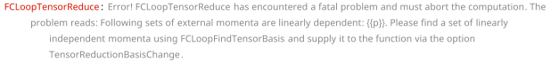
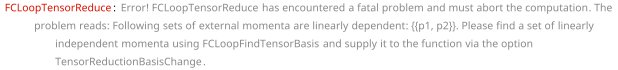

FCLoopTensorReduce[exp, topos] performs tensor reduction
for the numerators of multi-loop integrals present in exp.
Notice that exp is expected to be the output of
FCLoopFindTopologies where all loop integrals have been
written as fun[num, GLI[...]] with num being
the numerator to be acted upon.
The reduction is done only for loop momenta contracted with Dirac
matrices, polarization vectors or Levi-Civita tensors. Scalar products
with external momenta are left untouched. The goal is to rewrite
everything in terms of scalar products involving only loop momenta and
external momenta appearing in the given topology. These quantities can
be then rewritten in terms of inverse propagators (GLIs
with negative indices), so that the complete dependence on loop momenta
will go into the GLIs.
Unlike FCMultiLoopTID, this function does not perform
any partial fractioning or shifts in the loop momenta.
The default value for fun is FCGV[“GLIProduct”] set by
the option Head
Overview, FCLoopFindTopologies.
1-loop tadpole topology
topo1 = FCTopology["tad1l", {SFAD[{q, m^2}]}, {q}, {}, {}, {}]\text{FCTopology}\left(\text{tad1l},\left\{\frac{1}{(q^2-m^2+i \eta )}\right\},\{q\},\{\},\{\},\{\}\right)
amp1 = FCGV["GLIProduct"][GSD[q] . GAD[\[Mu]] . GSD[q], GLI["tad1l", {1}]]\text{FCGV}(\text{GLIProduct})\left((\gamma \cdot q).\gamma ^{\mu }.(\gamma \cdot q),G^{\text{tad1l}}(1)\right)
amp1Red = FCLoopTensorReduce[amp1, {topo1}]\text{FCGV}(\text{GLIProduct})\left(\frac{(2-D) q^2 \gamma ^{\mu }}{D},G^{\text{tad1l}}(1)\right)
topo2 = FCTopology[prop1l, {SFAD[{q, m^2}], SFAD[{q - p, m^2}]}, {q}, {p}, {}, {}]\text{FCTopology}\left(\text{prop1l},\left\{\frac{1}{(q^2-m^2+i \eta )},\frac{1}{((q-p)^2-m^2+i \eta )}\right\},\{q\},\{p\},\{\},\{\}\right)
1-loop self-energy topology
amp2 = gliProduct[GSD[q] . GAD[\[Mu]] . GSD[q], GLI[prop1l, {1, 2}]]\text{gliProduct}\left((\gamma \cdot q).\gamma ^{\mu }.(\gamma \cdot q),G^{\text{prop1l}}(1,2)\right)
amp2Red = FCLoopTensorReduce[amp2, {topo2}, Head -> gliProduct]\text{gliProduct}\left(-\frac{2 D p^{\mu } \gamma \cdot p (p\cdot q)^2-2 p^2 \gamma ^{\mu } (p\cdot q)^2-D p^4 q^2 \gamma ^{\mu }+3 p^4 q^2 \gamma ^{\mu }-2 p^2 q^2 p^{\mu } \gamma \cdot p}{(1-D) p^4},G^{\text{prop1l}}(1,2)\right)
If the loop momenta are contracted with some external momenta that do
not appear in the given integral topologies, they should be listed via
the option Uncontract
amp3 = gliProduct[SPD[q, x], GLI[prop1l, {1, 2}]]\text{gliProduct}\left(q\cdot x,G^{\text{prop1l}}(1,2)\right)
FCLoopTensorReduce[amp3, {topo2}, Uncontract -> {x}, Head -> gliProduct]\text{gliProduct}\left(\frac{(p\cdot q) (p\cdot x)}{p^2},G^{\text{prop1l}}(1,2)\right)
2-loop self-energy topology
topo3 = FCTopology["prop2L", {SFAD[{q1, m^2}], SFAD[{q2, m^2}], SFAD[q1 - q2], SFAD[q1 - p], SFAD[q2 - p]}, {q1, q2}, {p}, {}, {}]\text{FCTopology}\left(\text{prop2L},\left\{\frac{1}{(\text{q1}^2-m^2+i \eta )},\frac{1}{(\text{q2}^2-m^2+i \eta )},\frac{1}{((\text{q1}-\text{q2})^2+i \eta )},\frac{1}{((\text{q1}-p)^2+i \eta )},\frac{1}{((\text{q2}-p)^2+i \eta )}\right\},\{\text{q1},\text{q2}\},\{p\},\{\},\{\}\right)
amp3 = FCGV["GLIProduct"][GSD[q1] . GAD[\[Mu]] . GSD[q2], GLI["prop2L", {1, 1, 1, 1, 1}]]\text{FCGV}(\text{GLIProduct})\left((\gamma \cdot \;\text{q1}).\gamma ^{\mu }.(\gamma \cdot \;\text{q2}),G^{\text{prop2L}}(1,1,1,1,1)\right)
amp3Red = FCLoopTensorReduce[amp3, {topo3}]\text{FCGV}(\text{GLIProduct})\left(-\frac{p^4 (\text{q1}\cdot \;\text{q2}) \gamma ^{\text{\$AL}(\text{\$46})}.\gamma ^{\mu }.\gamma ^{\text{\$AL}(\text{\$46})}-p^2 (p\cdot \;\text{q1}) (p\cdot \;\text{q2}) \gamma ^{\text{\$AL}(\text{\$46})}.\gamma ^{\mu }.\gamma ^{\text{\$AL}(\text{\$46})}+D (p\cdot \;\text{q1}) (p\cdot \;\text{q2}) (\gamma \cdot p).\gamma ^{\mu }.(\gamma \cdot p)-p^2 (\text{q1}\cdot \;\text{q2}) (\gamma \cdot p).\gamma ^{\mu }.(\gamma \cdot p)}{(1-D) p^4},G^{\text{prop2L}}(1,1,1,1,1)\right)
Some choices of kinematics lead to the so-called zero Gram determinants, meaning that the external momenta are not linearly independent. This prevents the usual tensor reduction but can be handled via a basis change
FCClearScalarProducts[]
SPD[p] = 0;FCLoopTensorReduce[amp3, {topo3}]
\text{\$Aborted}
Using FCLoopFindTensorBasis we can construct an
alternative basis and supply it to the reduction procedure. In this case
we need to introduce an auxiliary vector n. For simplicity,
we choose it to be light-like
FCLoopFindTensorBasis[{p}, {}, n]\{\{p,n\},\{\},\{\}\}
In this case to complete the reduction we need to use IBPs. Furthermore, the existing topology should be augmented to include the new auxiliary vector.
amp3red = FCLoopTensorReduce[amp3, {topo3}, TensorReductionBasisChange -> {{p} -> {p, n}}, AuxiliaryMomenta -> {n},
FinalSubstitutions -> {SPD[n] -> 0}]\text{FCGV}(\text{GLIProduct})\left(\frac{1}{(2-D) (n\cdot p)^2}\left((\text{q1}\cdot \;\text{q2}) \left(-\gamma ^{\text{\$AL}(\text{\$58})}.\gamma ^{\mu }.\gamma ^{\text{\$AL}(\text{\$58})}\right) (n\cdot p)^2+(n\cdot p) (n\cdot \;\text{q2}) (p\cdot \;\text{q1}) \gamma ^{\text{\$AL}(\text{\$58})}.\gamma ^{\mu }.\gamma ^{\text{\$AL}(\text{\$58})}+(n\cdot p) (n\cdot \;\text{q1}) (p\cdot \;\text{q2}) \gamma ^{\text{\$AL}(\text{\$58})}.\gamma ^{\mu }.\gamma ^{\text{\$AL}(\text{\$58})}-D (n\cdot \;\text{q1}) (n\cdot \;\text{q2}) (\gamma \cdot p).\gamma ^{\mu }.(\gamma \cdot p)-D (n\cdot \;\text{q2}) (p\cdot \;\text{q1}) (\gamma \cdot n).\gamma ^{\mu }.(\gamma \cdot p)-D (n\cdot \;\text{q1}) (p\cdot \;\text{q2}) (\gamma \cdot p).\gamma ^{\mu }.(\gamma \cdot n)-D (p\cdot \;\text{q1}) (p\cdot \;\text{q2}) (\gamma \cdot n).\gamma ^{\mu }.(\gamma \cdot n)+(n\cdot p) (\text{q1}\cdot \;\text{q2}) (\gamma \cdot n).\gamma ^{\mu }.(\gamma \cdot p)+(n\cdot p) (\text{q1}\cdot \;\text{q2}) (\gamma \cdot p).\gamma ^{\mu }.(\gamma \cdot n)+2 (n\cdot \;\text{q1}) (n\cdot \;\text{q2}) (\gamma \cdot p).\gamma ^{\mu }.(\gamma \cdot p)+(n\cdot \;\text{q2}) (p\cdot \;\text{q1}) (\gamma \cdot n).\gamma ^{\mu }.(\gamma \cdot p)-(n\cdot \;\text{q2}) (p\cdot \;\text{q1}) (\gamma \cdot p).\gamma ^{\mu }.(\gamma \cdot n)-(n\cdot \;\text{q1}) (p\cdot \;\text{q2}) (\gamma \cdot n).\gamma ^{\mu }.(\gamma \cdot p)+(n\cdot \;\text{q1}) (p\cdot \;\text{q2}) (\gamma \cdot p).\gamma ^{\mu }.(\gamma \cdot n)+2 (p\cdot \;\text{q1}) (p\cdot \;\text{q2}) (\gamma \cdot n).\gamma ^{\mu }.(\gamma \cdot n)\right),G^{\text{prop2L}}(1,1,1,1,1) \;\text{FCGV}(\text{AddPropagators})(\{n\})\right)
{newtopo, gliRule} = FCLoopAugmentTopology[topo3, {SFAD[{{0, q1 . n}}], SFAD[{{0, q2 . n}}]}]\left\{\text{FCTopology}\left(\text{prop2LA},\left\{\frac{1}{(\text{q1}^2-m^2+i \eta )},\frac{1}{(\text{q2}^2-m^2+i \eta )},\frac{1}{((\text{q1}-\text{q2})^2+i \eta )},\frac{1}{((\text{q1}-p)^2+i \eta )},\frac{1}{((\text{q2}-p)^2+i \eta )},\frac{1}{(n\cdot \;\text{q1}+i \eta )},\frac{1}{(n\cdot \;\text{q2}+i \eta )}\right\},\{\text{q1},\text{q2}\},\{p,n\},\{\},\{\}\right),\text{FCGV}(\text{AddPropagators})(\{n\}) G^{\text{prop2L}}(\text{n1$\_$},\text{n2$\_$},\text{n3$\_$},\text{n4$\_$},\text{n5$\_$}):\to G^{\text{prop2LA}}(\text{n1},\text{n2},\text{n3},\text{n4},\text{n5},0,0)\right\}
In this form the expression can be converted into GLIs
and passed to an IBP reduction tool
amp3red /. gliRule\text{FCGV}(\text{GLIProduct})\left(\frac{1}{(2-D) (n\cdot p)^2}\left((\text{q1}\cdot \;\text{q2}) \left(-\gamma ^{\text{\$AL}(\text{\$58})}.\gamma ^{\mu }.\gamma ^{\text{\$AL}(\text{\$58})}\right) (n\cdot p)^2+(n\cdot p) (n\cdot \;\text{q2}) (p\cdot \;\text{q1}) \gamma ^{\text{\$AL}(\text{\$58})}.\gamma ^{\mu }.\gamma ^{\text{\$AL}(\text{\$58})}+(n\cdot p) (n\cdot \;\text{q1}) (p\cdot \;\text{q2}) \gamma ^{\text{\$AL}(\text{\$58})}.\gamma ^{\mu }.\gamma ^{\text{\$AL}(\text{\$58})}-D (n\cdot \;\text{q1}) (n\cdot \;\text{q2}) (\gamma \cdot p).\gamma ^{\mu }.(\gamma \cdot p)-D (n\cdot \;\text{q2}) (p\cdot \;\text{q1}) (\gamma \cdot n).\gamma ^{\mu }.(\gamma \cdot p)-D (n\cdot \;\text{q1}) (p\cdot \;\text{q2}) (\gamma \cdot p).\gamma ^{\mu }.(\gamma \cdot n)-D (p\cdot \;\text{q1}) (p\cdot \;\text{q2}) (\gamma \cdot n).\gamma ^{\mu }.(\gamma \cdot n)+(n\cdot p) (\text{q1}\cdot \;\text{q2}) (\gamma \cdot n).\gamma ^{\mu }.(\gamma \cdot p)+(n\cdot p) (\text{q1}\cdot \;\text{q2}) (\gamma \cdot p).\gamma ^{\mu }.(\gamma \cdot n)+2 (n\cdot \;\text{q1}) (n\cdot \;\text{q2}) (\gamma \cdot p).\gamma ^{\mu }.(\gamma \cdot p)+(n\cdot \;\text{q2}) (p\cdot \;\text{q1}) (\gamma \cdot n).\gamma ^{\mu }.(\gamma \cdot p)-(n\cdot \;\text{q2}) (p\cdot \;\text{q1}) (\gamma \cdot p).\gamma ^{\mu }.(\gamma \cdot n)-(n\cdot \;\text{q1}) (p\cdot \;\text{q2}) (\gamma \cdot n).\gamma ^{\mu }.(\gamma \cdot p)+(n\cdot \;\text{q1}) (p\cdot \;\text{q2}) (\gamma \cdot p).\gamma ^{\mu }.(\gamma \cdot n)+2 (p\cdot \;\text{q1}) (p\cdot \;\text{q2}) (\gamma \cdot n).\gamma ^{\mu }.(\gamma \cdot n)\right),G^{\text{prop2LA}}(1,1,1,1,1,0,0)\right)
Not all cases of zero Gram determinants require an auxiliary vector. If the new basis can be constructed from a subset of the present external momenta, this should be sufficient for the reduction. Consider e.g. this threshold kinematics
FCClearScalarProducts[]
SPD[p1] = mm;
SPD[p2] = mm;
SPD[p1, p2] = mm;topo4 = FCTopology["tri1l", {SFAD[{q, m^2}], SFAD[{q - p1, 0}], SFAD[{q - p2, 0}]}, {q}, {p1, p2}, {}, {}]\text{FCTopology}\left(\text{tri1l},\left\{\frac{1}{(q^2-m^2+i \eta )},\frac{1}{((q-\text{p1})^2+i \eta )},\frac{1}{((q-\text{p2})^2+i \eta )}\right\},\{q\},\{\text{p1},\text{p2}\},\{\},\{\}\right)
amp4 = FCGV["GLIProduct"][GSD[q] . GAD[\[Mu]] . GSD[r], GLI["tri1l", {1, 1, 1}]]\text{FCGV}(\text{GLIProduct})\left((\gamma \cdot q).\gamma ^{\mu }.(\gamma \cdot r),G^{\text{tri1l}}(1,1,1)\right)
FCLoopTensorReduce[amp4, {topo4}]
\text{\$Aborted}
FCLoopFindTensorBasis[{p1, p2}, {}, n]\left( \begin{array}{c} \;\text{p1} \\ \;\text{p2} \\ \;\text{p2}\to \;\text{p1} \;\text{FCGV}(\text{Prefactor})(1) \\ \end{array} \right)
Here the momenta p1 and p2 are obviously identical, so we need to do the reduction w.r.t p1 only
FCLoopTensorReduce[amp4, {topo4}, TensorReductionBasisChange -> {{p1, p2} -> {p1}}]\text{FCGV}(\text{GLIProduct})\left(\frac{(\text{p1}\cdot q) (\gamma \cdot \;\text{p1}).\gamma ^{\mu }.(\gamma \cdot r)}{\text{mm}},G^{\text{tri1l}}(1,1,1)\right)